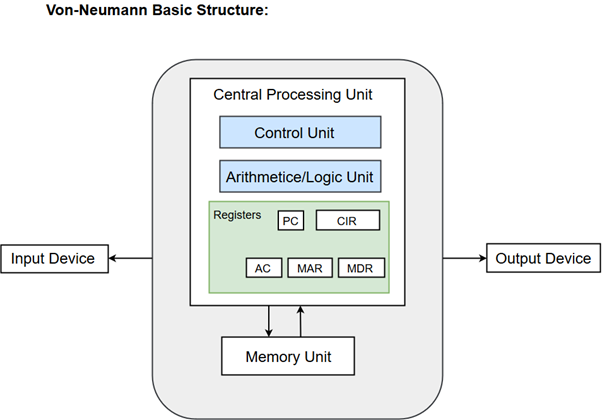

|

|
Von Neumann Architecture
|
Harvard Computer Architecture
|
| The same physical memory is used to store instructions and data. |
Separate physical memory is provided to store instructions and data. |
| It is based on the stored-program concept. |
It is based on relay-based computer models. |
| Common bus for transferring instructions and data. |
Separate buses are used to transfer instructions and data. |
| Two clock cycles are used to execute a single instruction. |
A single clock cycle is used to execute a single instruction. |
| It is cheaper in comparison to Harvard architecture. |
It is more expensive than Von Neumann’s architecture. |
| CPU can not access instructions and read/write at the same time. |
CPU can access instructions and read/write at the same time. |
| It is used in personal computers and small computers. |
It is used in micro controllers and signal processing |